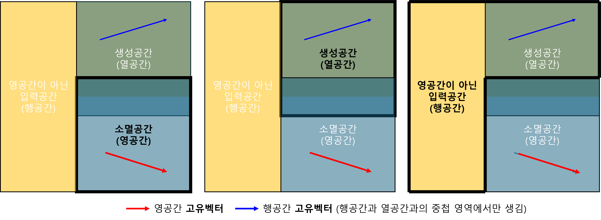

(b) Space

1. 열공간(생성 출력공간)
연산자 $\hat{A}$의 생성공간(Column Space) 이란, 연산자의 작용을 통해 생성(출력)되는 모든 벡터들의 집합이다. 행렬의 열벡터는 생성공간을 만든다.
$$ \text{Col}(\hat{A}) =\{|f\rangle, \hat{A}|v\rangle=|f\rangle\} $$2. 영공간(소멸 입력공간)
연산자 $\hat{A}$의 영공간(Null Space) 이란, 연산결과가 0벡터가 되는 모든 입력 벡터 들의 집합이다.제차 선형 방정식(Homogeneous Linear Equation) 의 해공간(Solution Space) 과 같다.
$$ \text{Null}(\hat{A}) =\{|n\rangle, \hat{A}|n\rangle=0\} $$영공간은 어떤 연산자(변환)에 의해 ‘소멸(annihilate)‘되거나 ‘무시’되는 상태들의 집합이다. 이는 시스템의 평형 상태, 보존 법칙, 대칭성, 정보 손실 등 근본적인 특성을 나타내는 매우 중요한 공간이다. 이 때문에 소멸 공간(Annihilation Space) 이라는 직관적인 이름으로도 이해할 수 있다.
3. 행공간(영공간을 제외한 입력공간)
영공간을 제외한 모든 입력공간을 의미하며, 행렬에서 행공간을 의미한다. 말 그대로 영공간의 제외해야 하므로, 영공간과 독립이어야 한다. 따라서, 행렬의 행벡터가 된다.
$$ \text{Row}(\hat{A}) =\{\langle r|, \langle r|n\rangle=0\text{ for all }|n\rangle \text{ where }\hat{A}|n\rangle=0\} $$지금까지 공간을 켓으로 표기하였다. 행공간을 브라로 표현했다고 해서 그것이 더 이상 공간이 아닌 것이 아니다. 단지 공간에 사는 벡터들의 한 종류를, 그들의 ‘연산자’적인 성격을 부각시키기 위해 브라라는 얼굴로 표현했을 뿐이다.
행공간은 열공간(생성공간)과 일대일로 매칭된다.
example1) 1차원 영공간(직선), 행렬 A의 열공간, 영공간, 행공간을 구하시오.
$$ A =\begin{bmatrix} 1 & 2 \\ 3 & 6 \end{bmatrix} $$example2) 2차원 영공간 (평면), 행렬 B의 영공간을 구하시오.
$$ B =\begin{bmatrix} 1 & 2 & 3 \\ 0 & 0 & 0 \\ 0 & 0 & 0 \end{bmatrix} $$